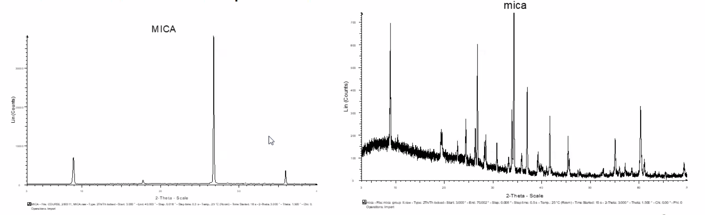
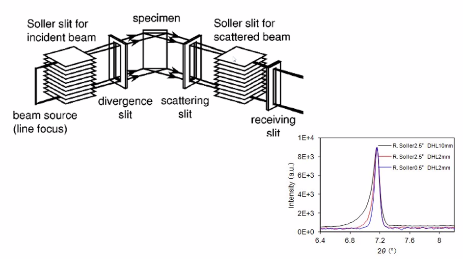

Topas course
3 types of fitting
- Peak fitting (individual peaks)
- Structure-less fitting (Pawley fitting, from space group)
- Ritveld fitting, from crystal structure and composition.
These can be used together in TOPAS
Least squares fitting
\(R_{wp} = \frac{\Sigma_i}{}\)
Are you overfitting your data?
Balance of observables vs variables
Chi\(^2\), (\(\chi\)) (GOF in TOPAS)
\(\chi^2 = [\frac{R_{wp}}{R_E}]^{1/2}\)
R\(_E\) is the expected R-factor
- Basically the best fit the data statistics can support
Visual inspection of fit and variables is important
- Many variables can correlate - watch for this
- Look for the software doing stupid things
- e.g. fitting background into broad peaks
Full pattern fitting
- Link the peaks using some crystallographic knowlende
Rietveld fitting
- Data quality determines analysis limitations
- Sample prep is important (Flat surface, enough material)
- Choise of divergence slits (all X-ray beams must hit sample at all angles if not: can makes some peaks larger or smaller)
- Wider collection windows (up to at least 90 deg 2-theta for most samples)
- Choose step-size to properly describe peak shapes
- Rotation of samples on Si-holders: Take 20x1h scans in stead of 1x20h scan
- Longer collection times -> lower noise
- Capillary measurements can be an advantage, especially when preferred orientation is possible. This eliminates sample height errors as well.
- Pitfalls:
- Preferred orientations: Random orientation is assumed for powder diffraction.
- 
- Can be avoided by:
- capillaries (spinning it)
- roughened sample holder (or grease method with powder sprinkle)
- Peaks and valleys, just ensure flat top of sample.
Quantitative Phase Analysis
- \(w_i = \frac{s_i \cdot V_i \cdot M_i \cdot Z_i}{\Sigma_{j=1}^n s_j \cdot V_j \cdot M_j \cdot Z_j}\)
- s is the scale factor of the phase
- V is the volume of unit cell
- M is the mass of one formula unit
- Z is the number of formula units
- Need to know the correct composition
- Amorphous phases of you material can throw off the results.
Settings
LP factor
- Only needs to be used when ??
Fundamental parameters (FP)
- Used to tell topas about the instrument
- Instrument
- Primary/secondary radius
- Linear PSD
- Angular range = 4.1deg (for Lynxeye detector)
- FDS Angle = 0.1 (for 0.2mm slit)
- Full axial model
- Source length = 12
- Sample Length = 15
- RS Length = 12
- Primary/secondary soller slits = 2.5
- 
L often means Lorentian type peak G often mean Gaussian type peak Lvol-IB is easiest/best for finding crystallite sizes. LVol-FWHM is basically Scherrer equation., which isnt as nice because it has a k-factor which can be different for people, making Scherrer sizes almost pointless in the litterature. Standard k-value is 0.89, but not all use it.
Judging fit
- Tricky
- R_wp-dash is better than R_wp
- -dash does not include contribution from background fitting. Makes huge meaning when you have low signal-to noise ratio. You can spend many parametres doing the fitting of the background, while the peak fitting is bad. R_wp-dash ignores background fitting and is therefore better.
Capillaries
- Glass can give broad background peak at around 30\(^\circ\) 2 \(\theta\) which can be solved by just fitting a single phase with really small (2nm) crystallite size to. By fitting and locking that peak you can better refine other parameters more directly connected to your crystal.